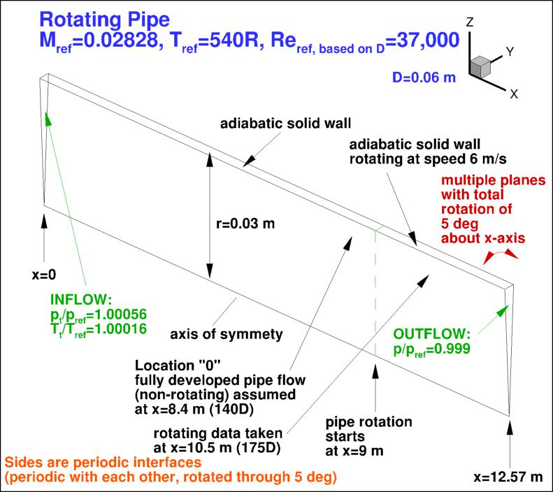
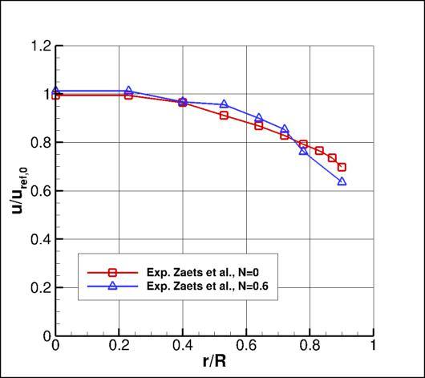
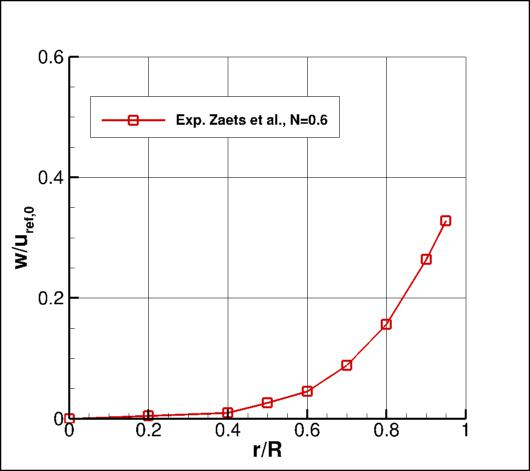
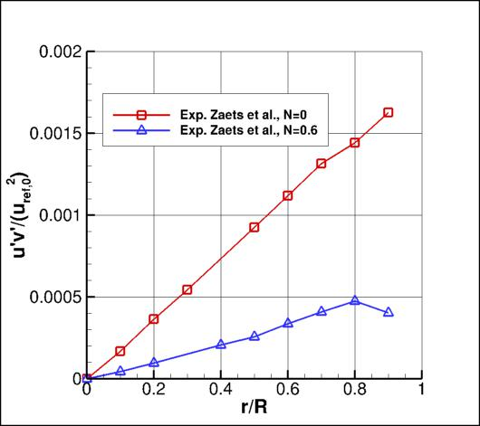
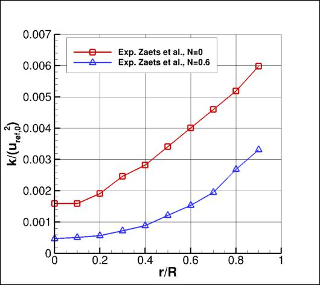

Public Access (formerly Langley Research Center)Turbulence Modeling Resource |
 This page under construction... Come back later!
This page under construction... Come back later!
Return to: Turbulence Modeling Resource Home Page
ARP: Axisymmetric Rotating Pipe
The purpose here is to provide a
validation case for turbulence models. Unlike verification, which seeks to
establish that a model has been implemented correctly, validation compares
CFD results against data in an effort to establish a model's ability to
reproduce physics. A large sequence of nested grids of the same family are
provided here. Data are also provided for comparison. For this
particular axisymmetric rotating pipe case (from Zaets et al),
the data is from an experiment.
Despite its geometric simplicity, the axially-rotating pipe displays complex
physics that makes it an ideal test case for turbulence models. In particular,
it tests the ability of these models to capture effects due to rotation,
curvature, and partial relaminarization.
The experiment involves flow through a pipe of 0.06 m diameter (D).
The flow developed in a long non-rotating section, followed by a rotating section 25D long.
The centerline axial velocity of the non-rotating section was 10 m/s, and Reynolds
number based on centerline axial velocity and D was 37,000. In the rotating section, the pipe wall rotated at
a speed of 6 m/s (N = ratio of rotation speed to centerline axial velocity = 0.6).
The developed flow in the non-rotating section was compared with the flow
in the rotating section, 1.5 m (25D) downstream of the start of the rotation.
This axisymmetric case is not a 2-D computation; in this case, multiple grid planes are employed
in the circumferential direction, and a
periodic (rotated) grid system includes appropriate boundary conditions on the periodic sides of the grid.
The CFD grid, provided in units of meters,
includes 9 m (150D) of developing (non-rotating) pipe section, followed by over 3.5 m (58D)
of rotating section. In this latter section, the grid includes constant (refined) grid spacing up to the
measurement station at x=10.5 m (x=175D), followed by grid stretching to the outflow boundary.
At the inflow plane, total pressure and total temperature are specified, with the static pressure
allowed to vary. At the outflow, static pressure is set (in order to achieve a peak axial
velocity at the centerline of approximately 10 m/s
at the location "0" reference station), and other quantities are extrapolated from
the interior of the computational domain.

Note that the above BCs may need revision. In particular:
The experimental data reference is: Zaets, P. G., Kurbatskii, A. F., Onufriev, A. T.,
Poroseva, S. V., Safarov, N. A., Safarov, R. A., and Yakovenko, S. N.,
"Experimental Study and Mathematical Simulation of the Characteristics of a Turbulent Flow
in a Straight Circular Pipe Rotating About its Longitudinal Axis,"
Journal of Applied Mechanics and Technical Physics, Vol. 39,
No. 2, 1998, pp. 249-260.
Some of the experimental data for this case are shown below.
N=0 represents the non-rotating flow, while N=0.6 represents the flow with rotating pipe velocity of 6 m/s.
Note the original data nondimensionalized many of the quantites by a reference wall friction
velocity, utau = 0.435 m/s.
Here, these have been re-nondimensionalized by uref,0 (10 m/s) instead, which is
more convenient for direct comparison with the CFD.
Also note that in the experimental data, "y" and "v" represent the radial direction, while "z" and "w"
represent the circumferential direction.




The experimental data used are provided here:
Other relevant experimental data:
What to Expect:
(Other turbulence model results may be added in the future.)
Neil Ashton of University of Oxford is acknowledged for his help putting
together this web page.
Return to: Turbulence Modeling Resource Home Page
RESULTS
LINK TO EQUATIONS
MRR Level
SA (not ready yet)
SA eqns
4
Page Curators: Christopher Rumsey,
Ethan Vogel,
Clark Pederson
Last Updated: 05/10/2022